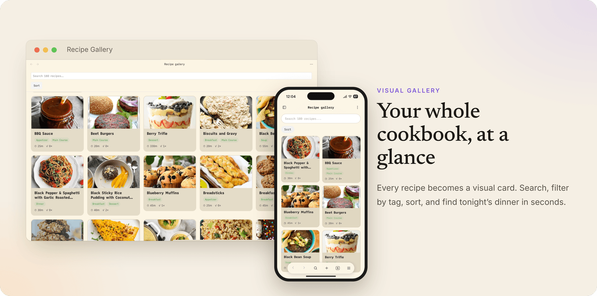
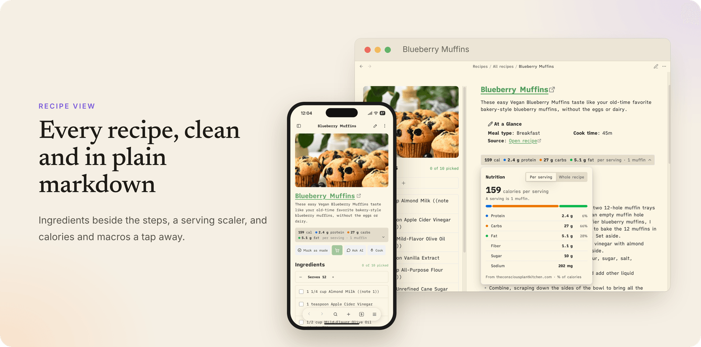
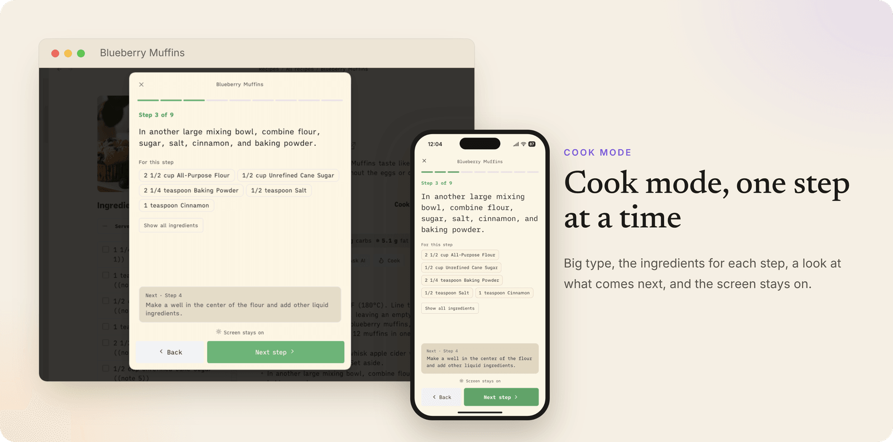
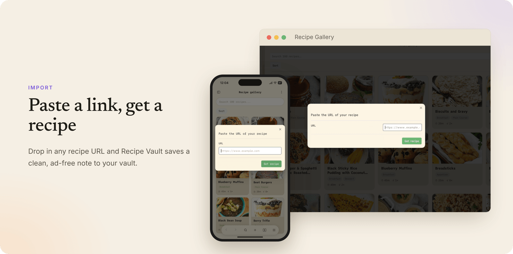

Your recipes, in plain markdown.
Paste a URL, get a clean recipe note. Browse your whole collection in a visual gallery, search by what's already in the fridge, scale it for a crowd, build a shopping list in one tap, and cook it one step at a time, all inside Obsidian. No subscriptions, no accounts, no ads.
Free and open source (MIT) · Works on desktop and mobile.

A tour of the vault
The screens you'll actually use



Features
Everything you'd want, none of the subscription
Recipe Vault keeps your collection as ordinary markdown notes in your own vault, so it stays yours, works offline, and syncs however you already sync.
Import from any URL
Reads structured recipe data (JSON-LD) straight off the page and builds a clean note instantly. No ads, no life story about a trip to Tuscany.
Add a recipe from a photo
Photograph a cookbook page and let AI vision transcribe it, with a verify-and-edit step before saving. Multi-page spreads work in one go.
Recipe gallery
Browse your whole collection visually in a dedicated gallery view, with photos, meal types, and cook times at a glance.
Search everything
Filter as you type across titles, meal types, and ingredients, so you can find every recipe that uses what's already in the fridge.
Shopping list
Tick ingredients and send them to one shopping list file. Duplicates combine even when recipes wrote them differently, and the list is sorted by aisle.
Scale a recipe
Make a double batch, or six servings instead of four. The amounts change in the recipe and in cook mode, and the shopping list gets the scaled amounts.
Calories and macros
Turn on nutrition and imports bring the calories, protein, carbs and fat from the recipe page, per serving or for the whole batch. Off unless you want it.
Compare recipes
Select multiple recipes and view them side by side, with shared and unique ingredients highlighted.
Mark as made
Track when you last made something and how many times, right in the note's frontmatter.
Ask AI for edits
Request changes like "make this dairy-free" or "scale to 2 servings" via OpenRouter. Optional, and it needs your own API key.
Clean titles
Imported titles lose the filler, so "The Best Easy Weeknight Chili" comes in as "Chili". Works in English, German, Spanish and French.
Customizable templates
Full Handlebars support, so imported notes come out looking exactly how you want them.
Cook mode
One step at a time in big type, with the ingredients that step uses and the next one in view. The screen stays on while you cook.
Made for the kitchen
An optional layout for your phone splits a recipe into Ingredients and Steps tabs, with big rows to tap and the buttons by your thumb.
Cooklang too
Open .cook files in a recipe view, or save new recipes as Cooklang. The gallery, search, and shopping list work with both.
Quick start
From URL to recipe note in about ten seconds
Install the plugin
In Obsidian, open Settings → Community plugins, search for Recipe Vault, then install and enable it.
Paste a recipe URL
Click the chef hat icon in the ribbon (or run Import recipe from the command palette), paste a link, and press Enter.
Cook from your vault
The note lands in your save folder. Click the utensils icon to open the gallery and browse everything you've saved.
Local first
Your recipes don't live on someone else's server
Every recipe is a markdown file in your vault. Nothing is locked in a proprietary format, nothing needs an account, and nothing disappears when a startup gets acquired.
- No telemetry. Recipe Vault collects nothing about you or your vault.
- No accounts, no ads, no subscription. Install it and it works.
- Network use is opt-in and specific. It fetches the recipe pages you ask for; AI features only run with your own OpenRouter key.
- Open source, MIT licensed. Read every line, fork it, or send a pull request.
Start building your cookbook
Free, open source, and already waiting in Obsidian's community plugin directory.
Button not working? You'll need Obsidian installed first.